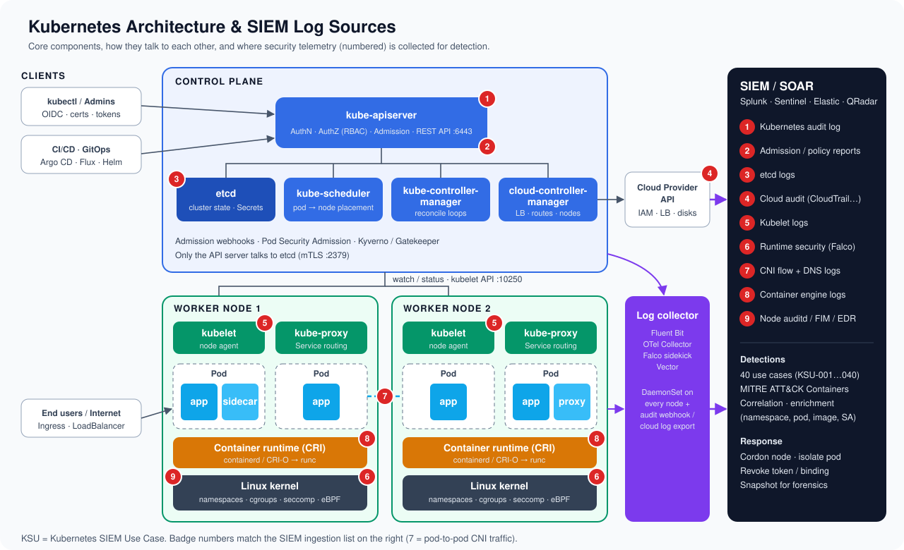
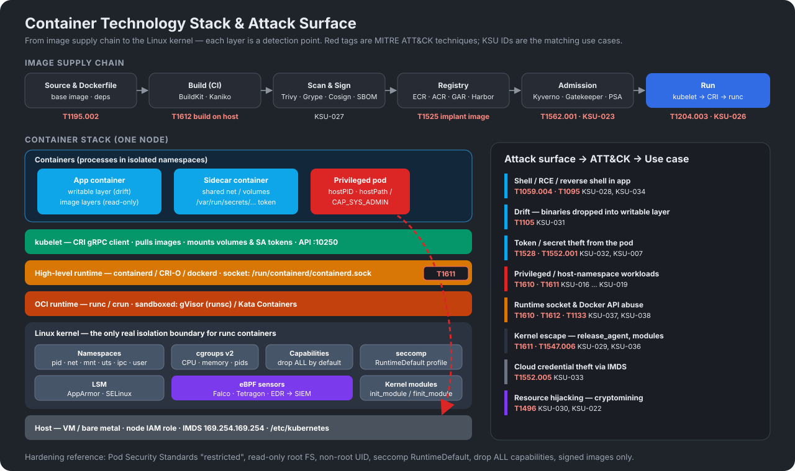

Detection engineering library
Kubernetes & Container SIEM Use Cases
40 detections for Kubernetes clusters and container runtimes. Each one lists its severity, the log sources it needs, a sample log, a confidence score and its MITRE ATT&CK mapping. You can search and filter them, and export them to CSV or JSON.
Kubernetes architecture & log sources
The red badges show where security telemetry is collected. Every use case below depends on one or more of these sources reaching the SIEM.

Kubernetes components and what to log
| Component | Plane | Role | Security telemetry | Key threats |
|---|---|---|---|---|
| kube-apiserver | Control | Front door for all cluster operations; authentication, RBAC authorization and admission control. | Audit log (policy: Metadata / RequestResponse) | Anonymous access, RBAC abuse, secret theft, exec |
| etcd | Control | Key-value store holding all cluster state, including Secrets. | etcd logs, network flows to :2379/:2380 | Direct secret extraction, state tampering |
| kube-scheduler | Control | Assigns pods to nodes based on resources, affinity and taints. | Component logs, audit (bindings) | Targeting pods onto specific nodes (nodeName / tolerations) |
| kube-controller-manager | Control | Runs reconcile loops (Deployments, Jobs, ServiceAccounts, CSR signing). | Component logs, audit | CSR signing abuse, token controller misuse |
| cloud-controller-manager | Control | Integrates with the cloud API for load balancers, routes and node lifecycle. | Cloud audit logs (CloudTrail, Azure Activity, GCP Audit) | Cloud IAM abuse, logging disabled |
| kubelet | Node | Node agent: starts containers via CRI, mounts volumes and service account tokens, serves API on :10250. | kubelet journal logs, flows to :10250 | Unauthenticated kubelet API, static pod persistence |
| kube-proxy | Node | Programs iptables / IPVS / eBPF rules for Service routing. | CNI / flow logs | Traffic redirection, Service exposure |
| Container runtime | Node | containerd / CRI-O pull images and call runc to create containers. | Runtime logs, Docker events, socket access | Socket abuse, malicious images |
| Pod / container | Workload | One or more containers sharing network and volumes. | Falco / eBPF / EDR, application logs | RCE, shell, drift, mining, escape |
| CNI plugin | Add-on | Pod networking and NetworkPolicy enforcement (Calico, Cilium). | Hubble / Calico flow logs, DNS (CoreDNS) | Lateral movement, exfiltration, C2 |
| Admission controllers | Add-on | Pod Security Admission, Kyverno, OPA Gatekeeper, image verification. | Policy reports, audit annotations | Policy bypass, unsigned images |
Container technology stack
Containers are Linux processes isolated by namespaces, cgroups, capabilities, seccomp and LSMs, and with runc that kernel is the only isolation boundary. The figure links each layer to the attack techniques and use cases that cover it.

Use case library
No use cases match. Try a broader search or .
MITRE ATT&CK coverage
Techniques covered by the library, grouped by tactic. Select a technique to filter the use case list.
Methodology
Severity
- Critical Cluster or node takeover, or loss of visibility. Page on-call immediately.
- High Privilege escalation, credential access or persistence. Triage within 1 hour.
- Medium Suspicious activity that needs context. Triage the same day.
- Low Posture or hygiene signal. Review it in a weekly report.
Confidence score (0–100)
The expected chance that an alert is a true positive once baseline tuning is in place (allow-lists for GitOps service accounts, system namespaces and approved agents). The score is based on how specific the behaviour is and how often benign tools trigger it.
- ≥ 80 High: alert directly.
- 60–79 Medium: alert with enrichment, or correlate with another signal.
- < 60 Low: send to dashboards, hunting or risk-based scoring.
Using the detections
Detection logic is vendor-neutral pseudo-SPL. Translate it to your SIEM (Splunk SPL, Microsoft Sentinel KQL, Elastic EQL/ES|QL, QRadar AQL or Chronicle YARA-L). Sample logs are synthetic and sanitized. They use RFC 5737 documentation IPs and fictitious names.
Minimum telemetry: an API server audit policy at Metadata level, with RequestResponse for RBAC, pods and workloads, plus Falco or an equivalent eBPF runtime sensor on every node.